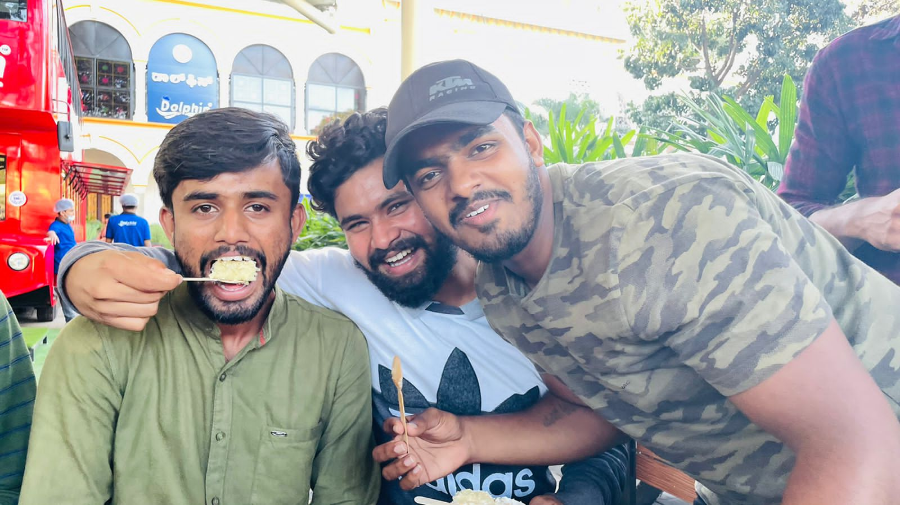

|  |
YASHWANTH YPYachenahalli Village, Bannur hobli, TN Pura taluk, Mysore district 571101 CONTACT ME |
To apply my knowledge and skills to the maximum Passionate about learning new technologies exampanding my knowledge to builda valuable skillset and contribute the same to the organization.
| GRADUATION | DISCIPLINE | NAME OF THE INSTITUTE | UNIVERSITY | YEAR OF PASSING | Aggregate CGPA or % |
|---|---|---|---|---|---|
| B.E | ECE | ATME COLLEGE OF ENGINEERING MYSORE | VTU Belgum | 2023 | 7.45 |
| PUC | PCMB | RK PU COLLEGE | Pre-University Board | 2019 | 87% |
| SSLC | NA | Vivekananda school Bannur | Karnataka SSLC Board | 2017 | 93% |
I here by declare that the above mentioned particulars are true to the best of my knowledge and belief.